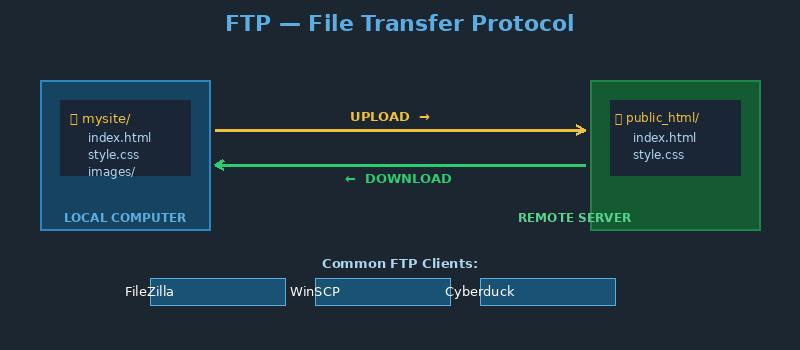

What is FTP?

FTP stands for File Transfer Protocol. It is a standard network protocol used to transfer files between a client and a server on a computer network, including the Internet.
Web developers often use FTP to upload website files from their local computer to a web hosting server.
Key facts:
- FTP uses separate channels for commands and data transfer
- SFTP (SSH File Transfer Protocol) adds encryption for security
- Common FTP clients: FileZilla, WinSCP, Cyberduck
- FTP runs on top of TCP/IP
Related terms: TCP/IP, Web Server, HTTP